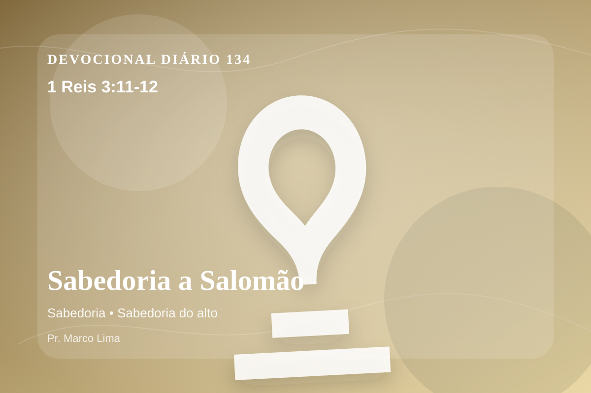

Sabedoria a Salomão
Pelo que Deus lhe disse: Porquanto pediste isso, e não pediste para ti muitos dias, nem riquezas, nem a vida de teus inimigos, mas pediste entendimento para discernires o que é justo, eis que faço segundo as tuas palavras. Eis que te dou um coração tão sábio e entendido, que antes de ti teu igual não houve, e depois de ti teu igual não se levantará.
Pensamento
Este devocional começa com uma pergunta simples: que área da sua vida precisa ser iluminada por 1 Reis 3:11-12 hoje?
Salomão pediu sabedoria para governar, não apenas benefício pessoal. A sabedoria que agrada a Deus nasce quando o coração deseja servir melhor e não apenas vencer sozinho.
O tema de sabedoria precisa ser recebido com simplicidade e seriedade. O ponto central não é apenas saber mais, mas viver de modo mais rendido. A sabedoria bíblica não é apenas informação correta, mas discernimento para viver diante de Deus. Ela une temor do Senhor, humildade e obediência prática nas decisões diárias.
Examine se existe orgulho, comparação, medo, culpa escondida ou autossuficiência impedindo sua resposta ao Senhor. A graça não nos humilha para destruir; ela nos quebra para reconstruir em Cristo.
Arrependimento não é apenas sentir peso na consciência; é voltar-se para Deus, abandonar o caminho que entristece o Senhor e confiar que a graça de Cristo é suficiente para perdoar e transformar.
Este é o evangelho que sustenta toda aplicação: Jesus Cristo morreu pelos pecadores, ressuscitou em vitória e chama cada pessoa a responder com fé, arrependimento e uma vida rendida ao Seu senhorio.
Cristo não veio apenas melhorar comportamentos, mas salvar pessoas. Na cruz, Ele trata a culpa; na ressurreição, Ele abre caminho para uma nova vida.
Leve esta Palavra para o ponto mais concreto do seu dia. O fruto da meditação aparecerá quando Cristo governar uma reação, uma prioridade ou uma escolha.
Para Praticar Hoje
- Leia 1 Reis 3:11-12 lentamente e destaque uma palavra ou expressão central do texto.
- Confesse a Deus um pecado, resistência ou frieza espiritual que esta Palavra revelou.
- Declare sua fé em Jesus Cristo e pratique hoje uma atitude concreta de arrependimento e obediência.
Oração
Senhor Deus, eu recebo a Tua Palavra em 1 Reis 3:11-12 com reverência. Reconheço que preciso de arrependimento, perdão e nova vida. Creio que Jesus Cristo morreu pelos meus pecados e ressuscitou para me salvar. Lava meu coração, governa minha vida e conduz-me em obediência simples ao Teu evangelho. Em nome de Jesus. Amém.
{kind=link}